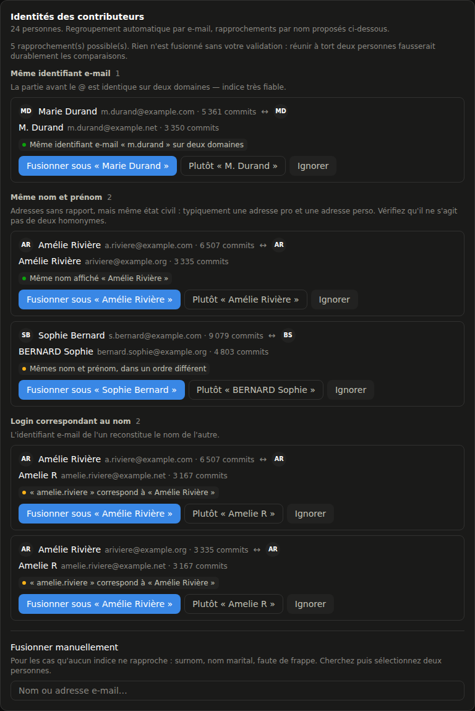

$ gitstats --instances 2 --depots 234 --backend none
234 dépôts. 2 GitLab.
0 backend.
Un tableau de bord d'activité Git qui tourne entièrement dans votre navigateur : il appelle lui-même l'API de chaque instance avec votre token, agrège commits et lignes de code, et stocke tout en IndexedDB. Rien à déployer, rien à administrer, rien qui sort de votre machine.
// le problème
GitLab répond pour un dépôt. Pas pour un parc.
Et les outils qui savent le faire demandent un backend, une base, un compte de service — donc une décision d'hébergement, une revue de sécurité, et un token qui vit ailleurs que chez vous.
01
Multi-instances natif
Plusieurs GitLab dans les mêmes graphiques. Un limiteur de débit par serveur, traitement en parallèle, et un token expiré n'arrête que son instance.
02
Incrémental agressif
Un dépôt qui n'a pas bougé coûte zéro appel — last_activity_at arrive gratuitement dans la liste des projets.
03
Identités rapprochées
Fusion automatique sur e-mail identique, suggestions groupées par indice pour le reste. Résolues à la lecture : instantané et réversible.
04
Miroirs détectés
Deux dépôts qui partagent un SHA sont le même code. Certain, quasi gratuit — et sans ça, un miroir gonfle silencieusement tous les classements.
05
Dépôts ignorables
Le dépôt de config que toute l'équipe touche sort des statistiques d'un clic, sans sortir de la collecte. Réversible.
06
Déploiement trivial
npm run build → un dossier statique, routage par hash. GitHub Pages, S3, un nginx interne : aucune règle de réécriture.
// les écrans
Quatre lectures, une seule barre de filtres
Période, instances, dépôts, personnes, merges masqués ou non — tout se repeint immédiatement, sans re-synchroniser.



// la collecte
Trois vagues, un coût mesuré
La vague 1 rend un classement utilisable en ~40 secondes pendant que la vague 2 travaille. Ses chiffres sont all-time : un aperçu, jamais la source des graphiques temporels.
| Vague | Endpoint | Coût |
|---|---|---|
| 0 — découverte | GET /projects?membership=true&simple=true | ~3 appels |
| 1 — aperçu | GET /projects/:id/repository/contributors | 1 / dépôt |
| 2 — historique | GET /projects/:id/repository/commits?since=…&with_stats=true | N / dépôt |
RateLimit-* et Retry-After
ne sont pas exposés en cross-origin : impossible de piloter le débit dessus. Le seul signal observable
depuis un navigateur est le 429 — d'où un token bucket + AIMD (débit divisé par deux sur incident,
remontée additive ensuite) et un backoff exponentiel avec full jitter. Le plafond visé se règle
dans l'écran Réglages.
// vérifié, pas supposé
Le pari « 100 % client » repose sur des mesures
Toutes prises sur une instance auto-hébergée avant d'écrire la première ligne de code.
| Point | Résultat |
|---|---|
CORS sur /api/v4 | ✓ access-control-allow-origin: *, préflight OPTIONS + PRIVATE-TOKEN → 200 |
| En-têtes de pagination | ✓ Link, X-Total, X-Next-Page, ETag exposés |
RateLimit-* / Retry-After | ✗ non exposés en cross-origin → auto-régulation obligatoire |
X-Total-Pages sur les commits | ✗ non renvoyé → pagination via Link rel="next" |
| 30 000 seaux en IndexedDB | ⚠ 24 s avec 3 index ; 2 jamais interrogés → supprimés + écriture par lots ⇒ 9 s |
// vos données
Le token ne quitte jamais l'onglet
Héberger l'application ne change rien : le serveur ne livre que des fichiers, il ne voit ni les tokens ni les données.
sessionStorage
Tokens jamais écrits
Ni en IndexedDB, ni dans le .json exporté. localStorage uniquement sur choix explicite, indexé par instance.
IndexedDB
Aucun commit brut archivé
Agrégation en seaux (dépôt, auteur, jour) dès l'ingestion. Seuls les seaux et les 100 derniers commits par dépôt sont conservés.
File System Access
Un .json chez vous
Réécrit automatiquement pendant les syncs, posé où vous voulez : partage réseau, dépôt privé. Il ne contient aucun secret.
// périmètre
Ce que ça mesure — et ce que ça refuse de mesurer
Ces chiffres décrivent une activité, pas une productivité et encore moins une performance individuelle. Un refactoring qui supprime 3 000 lignes est généralement une bonne journée de travail.
in scope
- ✓Commits — branche principale par défaut
- ✓Lignes ajoutées / supprimées
- ✓Contributeurs, jours actifs, rythme horaire
- ✓Plusieurs instances GitLab agrégées
- ✓Import / export d'un jeu de données
out of scope — volontairement
- ✗Merge requests, issues, pipelines CI
- ✗Lignes des commits de merge (doubleraient tout dépôt qui merge)
- ✗Fusion d'identités automatique au-delà de l'e-mail exact
- ✗Rattrapage d'un merge de branche vieille de > 7 jours (→ « Tout resynchroniser »)
- ✗Instance GitLab en
http://depuis une page HTTPS
// 2 minutes, 0 installation
Regardez d'abord. Branchez ensuite.
La démo tourne sur un jeu de données réaliste — 2 instances, 234 dépôts, 12 mois, un dépôt
mirroré, des identités en double — sans solliciter le moindre GitLab. Pour vos vrais chiffres :
une URL d'instance, un token read_api, et c'est parti.
aucun compte · aucune carte · aucun ticket à l'IT · git clone et c'est à vous